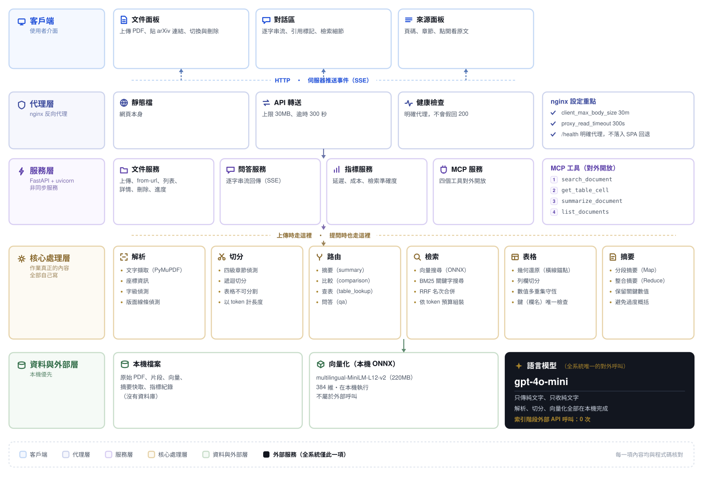
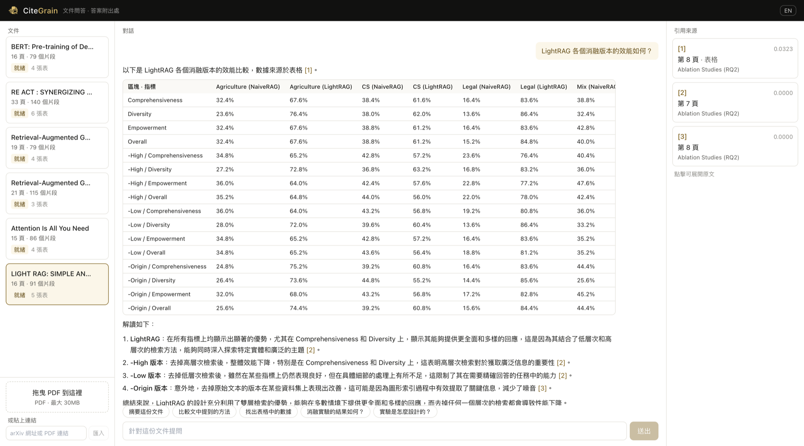

Offline indexing is tested explicitly: upload and indexing still succeed when the external model is unavailable — only answer generation needs the API.
The embedding model was picked by benchmark, not by default: four candidates were timed on the same four queries, and multilingual-MiniLM-L12-v2 ranked first on all of them (11.7s vs. 26.4s for bge-zh and 60.2s for e5-small) — bge-zh and e5-small placed 8th and 4th specifically on the Chinese-language queries.
On 12 test questions (half Chinese, half English), the fixed-length baseline found the correct section in its top 8 results 0% of the time. Adding section-aware chunking alone brought that to 83%; adding hybrid retrieval and table handling on top reached 100% (12/12).
17 tables were detected across four test papers; all 13 numeric tables passed both conservation checks and were indexed, the 2 that failed validation fell back to raw text, and zero incorrect cell values ever entered the index.
Every one of 233 answered queries carried a citation — zero answers with no traceable source. Separately, 47 queries were correctly refused when the uploaded document didn't cover the question, rather than answered anyway.
Finding the right chunks takes 19ms at the median. End-to-end latency (~3.5s at 1 concurrent user) is dominated by waiting on the language model to generate its answer (~2.2s), not by the retrieval this project actually built.
Beyond the assigned LightRAG paper, the same pipeline was verified on Attention Is All You Need, BERT, and RAG — spanning single- and double-column layouts, and papers with and without a built-in PDF outline.
Median context usage is 2,736 of the available 6,000 evidence tokens. Parsing, chunking, and embedding a document never touch an external API — only the final answer-generation step does.
A real query against the assigned LightRAG paper, answered entirely from a table the system reconstructed and verified.

關於 Yun 的作品集，直接問我